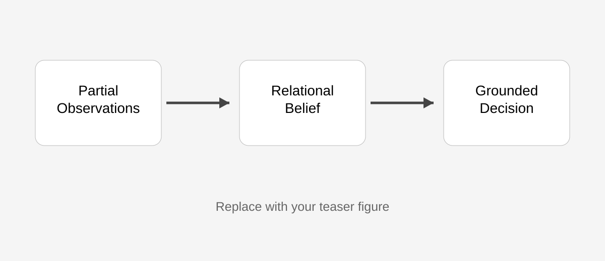
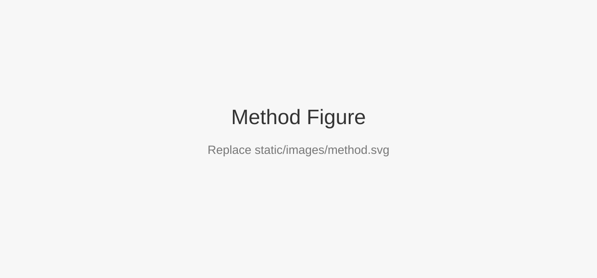
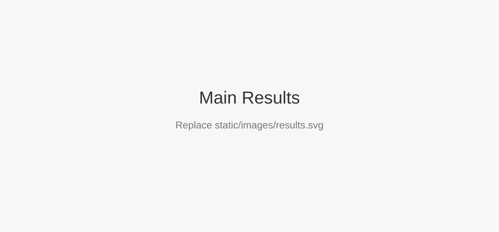

1. Infer
Construct relational beliefs from partial observations and interaction histories.
Relational Belief Optimization for Multi Agent Decision Making
1Ulsan National Institute of Science and Technology (UNIST)
Conference / arXiv 2026

TL;DR. Replace this sentence with the single most important claim of your paper.
Existing LLM agents often make decisions from incomplete observations without explicitly representing their relationships with other agents. We introduce MARBO, a framework that constructs relational beliefs and uses them to support more grounded multi agent decision making. Replace this placeholder with your final abstract.

Replace this caption with a concise description of the method figure.
Construct relational beliefs from partial observations and interaction histories.
Connect decisions to inferred ally, enemy, and role relationships.
Use better beliefs to improve downstream multi agent coordination.

Put the strongest quantitative result here, not every result from the paper.
@article{hwang2026marbo,
title = {MARBO: Relational Belief Optimization for Multi Agent Decision Making},
author = {Hwang, YeChan and Author, Two and Author, Three},
journal = {arXiv preprint},
year = {2026}
}